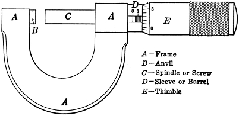

Q.18: Explain the principal of working of micrometer.
Answer:
For greater accuracy which is essential in the measurement of small sizes, we use micrometer. The micrometer has five main parts: Frame, anvil, spindle, sleeve and thimble. The frame is U shaped and made of steel. The gap of the frame permits the maximum dimension that can be measured. On the left end of the frame, the anvil is fixed and at right end, there is a screwed spindle. The diameter on anvil and spindle should be equal. A lock nut is provided to retain the reading. Sleeve has reference line and main scale on it. A tubular cover fixed with spindle is called as thimble. Thimble moves with spindle on main scale. Thimble has 50 equal parts on its beveled edge. This is called the circular scale. Ratchet screw is provided to tighten the thimble. When correct reading is achieved, ratchet slips automatically.
The basic operating principles of a micrometer are as follows:
1. The amount of rotation of an accurately made screw can be directly and precisely correlated to a certain amount of axial movement (and vice versa), through the constant known as the screw's lead. A screw's lead is the distance it moves forward axially with one complete turn (360°).
2. With an appropriate lead and major diameter of the screw, a given amount of axial movement will be amplified in the resulting circumferential movement.
For example, if the lead of a screw is 1 mm, but the major diameter (here, outer diameter) is 10 mm, then the circumference of the screw is 10π, or about 31.4 mm. Therefore, an axial movement of 1 mm is amplified (magnified) to a circumferential movement of 31.4 mm. This amplification allows a small difference in the sizes of two similar measured objects to correlate to a larger difference in the position of a micrometer's thimble.
